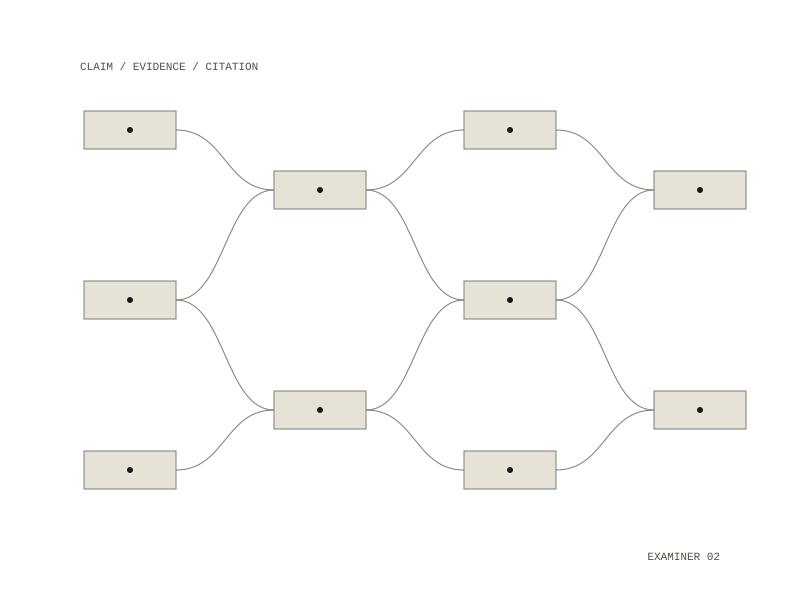

Assay
Assay reads a corpus of notes and extracts, for each claim, its supporting evidence, contradicting evidence, assumptions, citation chain and a confidence. From that it answers three questions a topic-and-summary catalogue cannot: which claims rest on a single source, where the notes contradict each other, and which citation chains are circular.

Refusing to report absence from a bad run
Its main output is "no support was found for this claim", which to a reader looks the same as "retrieval was broken". So the compiler refuses to report unsupported claims when a run is degraded: a stale index, unreadable documents, or a model that errored. Contradictions, single-source claims and citation cycles are still reported, because a contradiction that was found is still found, and a cycle is a fact about the corpus rather than about retrieval. Overriding the refusal has to be written at the call site, so the override is visible in the code that wanted it.
How it reads a corpus
- documents are split into passages on blank lines and long blocks, and retrieval works per passage, so text past a document's opening can still be found
- both wikilinks and Markdown links are parsed; on the first real corpus, a wikilink-only parser reported 0 cycles where there were 4
- every piece of evidence must quote its source, and the quote is checked against the cited document before it is kept; failures are discarded and counted
- the corpus is frozen by a fingerprint of its ids and contents and mounted read-only, rather than copied into the repository
- confidence is high, medium or low, because a 0.0–1.0 score from a model is false precision
Testing against known answers
A small fixture corpus has known answers: a claim supported by exactly one other document, two documents that contradict each other, an unsupported speculation, and a deliberate three-document citation cycle. A labels file states what a correct run must find, and make eval scores against it, matching by keyword overlap rather than exact wording. Health checks and cycle detection need no model; extraction and adjudication run on a local model.
Known limits
Retrieval is lexical only, so a claim supported in different words can read as unsupported, and the health check cannot see this. The single-source count counts documents, not independent sources: two notes copied from the same paper count as two.
single-source claims, contradictions between notes, circular citation chains
Python in Docker, with a local model for extraction